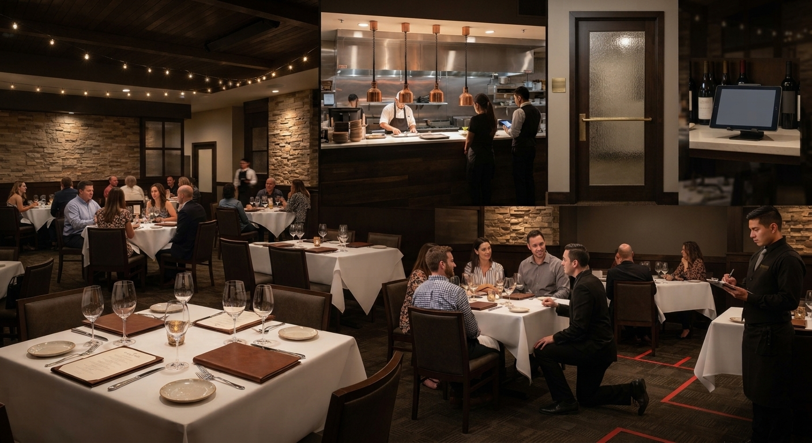

AI for fine dining restaurants.
A serious business consultation for a fine dining restaurant owner — see exactly what it uncovers, what it recommends, and why, in a full simulated example.
Owning a fine dining restaurant: where growth actually gets stuck

Most fine dining restaurant owners aiming to transition from personal firefighting to double-digit net operating profitability and management independence believe they need to launch expensive marketing campaigns or compromise their culinary standards. However, growth and margin expansion typically stall in administrative drag, slow private dining inquiry response times, and shift-to-shift service variability.
In the simulated consultation, the fictional restaurant (“The Oak & Ember”) operates in an affluent suburb 30 minutes outside a major city under owner Daniel Mercer, generating approximately $3.3 million in annual revenue across roughly 1,800 to 2,000 monthly covers with a $145 average check. The 32-person team runs a Tuesday-through-Saturday dinner-only schedule across 68 dining room seats and a 16-seat private dining room. Net operating profitability sits at an estimated 5 to 7 percent, compressed by food and beverage costs running at 30 to 32 percent and fully loaded labor running at 36 to 39 percent.
Behind the strong weekend dinner service sit severe operational bottlenecks: private dining inquiries take 1 to 2 days to answer during busy services, resulting in lost group bookings and empty midweek private rooms; floor managers handle recurring service roadblocks in silos without a shift log, forcing the owner to constantly firefight; guest recognition relies on individual staff memory and patchy host stand notes rather than a systematic pre-shift routine; and wine cellar stock lacks regular counts, leading to unmeasured by-the-glass spoilage.
Solutions must respect strict operating boundaries—keeping VIP communication and service recovery strictly human, ensuring zero extra platform complexity, and starting with risk-controlled pilots within a $5,000 to $15,000 setup budget.
- Annual revenue of approximately $3.3 million across 1,800 to 2,000 monthly covers and a $145 average check
- Net operating profitability estimated at 5 to 7 percent, compressed by 30–32% F&B costs and 36–39% fully loaded labor
- Seating footprint comprising 68 main dining room seats and a 16-seat private dining room operating Tuesday–Saturday dinner
- Private dining inquiries experiencing 1 to 2 day delays during busy shifts, causing lost group bookings
- Shift-to-shift service variance depending heavily on which manager and servers are working
- Guest recognition relying on staff memory and patchy host stand notes rather than systematic pre-shift briefings
- Wine cellar capital tied up in slow-moving stock with unmeasured by-the-glass spoilage
What the simulated consultation uncovered
The consultation began by auditing the restaurant's seating capacity, weekly demand swings, private dining workflow, labor costs, and inventory controls. The diagnosis revealed that profitability and owner time are constrained by administrative friction and service consistency rather than lack of local reputation.
From that diagnosis came four core opportunities, prioritized strictly with the owner:
1 · Reservation Inquiry, Waitlist and Cancellation Recovery
Implement an AI-assisted triage tool to draft prompt initial replies to private dining inquiries and organize availability details for host review, ensuring same-day responses while the host team retains final confirmation over dates and menus to protect brand tone.
2 · Personally Resolving Day-to-Day Problems (Shift Handoff Log)
Introduce a lightweight shift handoff and recurring issues log managed by floor managers to record service roadblocks, enabling the owner to spot operational patterns in five minutes each morning and eliminate repeated service errors.
3 · Improving How We Handle Guest Relationships
Institutionalize a mandatory non-negotiable five-minute pre-shift briefing every night for the whole floor team led by the manager on duty, covering regulars, occasions, allergies, and preferences, supported by servers checking section notes and managers touching every table.
4 · Wine List, Cellar and Beverage Inventory Intelligence
Establish a lightweight 10-to-15 minute weekly cellar scanning routine for managers using mobile devices to generate automated exception reports flagging slow-moving stock, open-date exposure, and reorder points under general manager oversight.
All recommended initiatives prioritize management independence, margin protection, and guest recognition while adhering to the owner's pilot budget and human-in-the-loop guardrails.
What makes this a serious business consultant
The consultation operates as an analytical partner, not a static software tool. It builds an understanding of fine-dining economics, average check structures, table yield, and hospitality standards before formulating action items. Recommendations cite concrete revenue figures, precise operating percentages, and verified staff limits.
- Root-cause diagnosis over top-of-funnel hype. Identifies that streamlining private dining response times and fixing shift handoffs protects margins better than generic marketing.
- Owner-driven priority alignment. Ranks projects strictly against Daniel Mercer's feedback: private dining triage first, shift logs second, guest relationship briefings third, and cellar intelligence fourth.
- Draft review protocol. Incorporates owner confirmation on pilot testing, host verification gates, and human-in-the-loop decision-making.
- Strict operational boundaries. Requires solutions to be lightning-fast and practical, keeping VIP communication and service recovery strictly human.
- Quantified pilot milestones. Governed by explicit operational metrics (same-day inquiry response times, 2 to 3 extra private bookings monthly, weekly cellar count adherence, and lower spoilage).
- Risk-controlled testing. Insists on pilot testing within a $5,000 to $15,000 setup range before committing to ongoing software overhead.
How the consultation follows the Vcrsoft Way
Every consultation follows the same five steps — understand the business, diagnose the growth problem, identify AI-enabled solutions, prioritize opportunities, and deliver an actionable strategy. Read the framework →
Understand the business
How you win customers, deliver work, and make money today — in your own words and numbers.
Diagnose the growth problem
Find the constraint actually holding growth back, and test it against your own evidence before believing it.
Identify AI-enabled solutions
Practical ways AI could help, matched to real problems in your business — not generic tool ideas.
Prioritize opportunities
Ranked on value, feasibility, cost, risk, and time to benefit — and argued with you, not handed to you.
Deliver an actionable strategy
A sequence, a 30-day plan, and measures of success, in a report you review before anything is final.
Simulated transcript and report
Review the full simulated interview and the final growth strategy report displayed in the right-hand panel above. Both documents are from the fictional demonstration business described — not a real client.